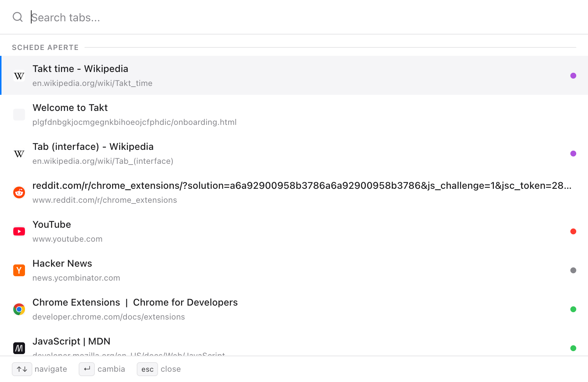
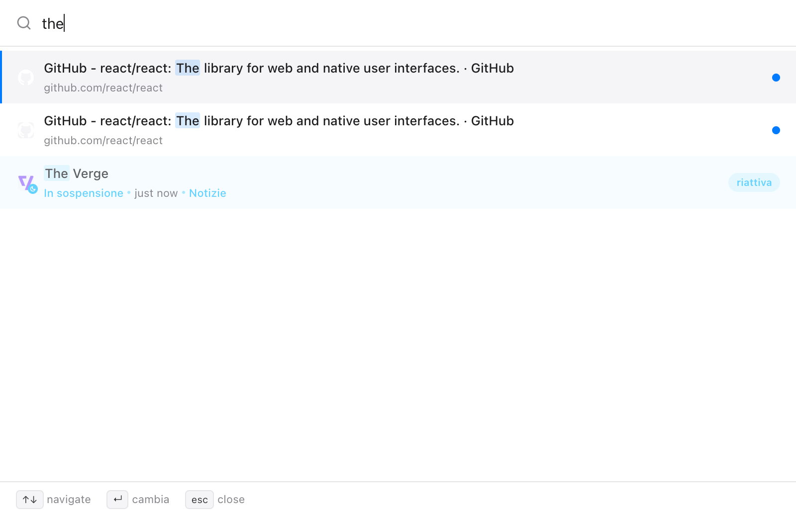
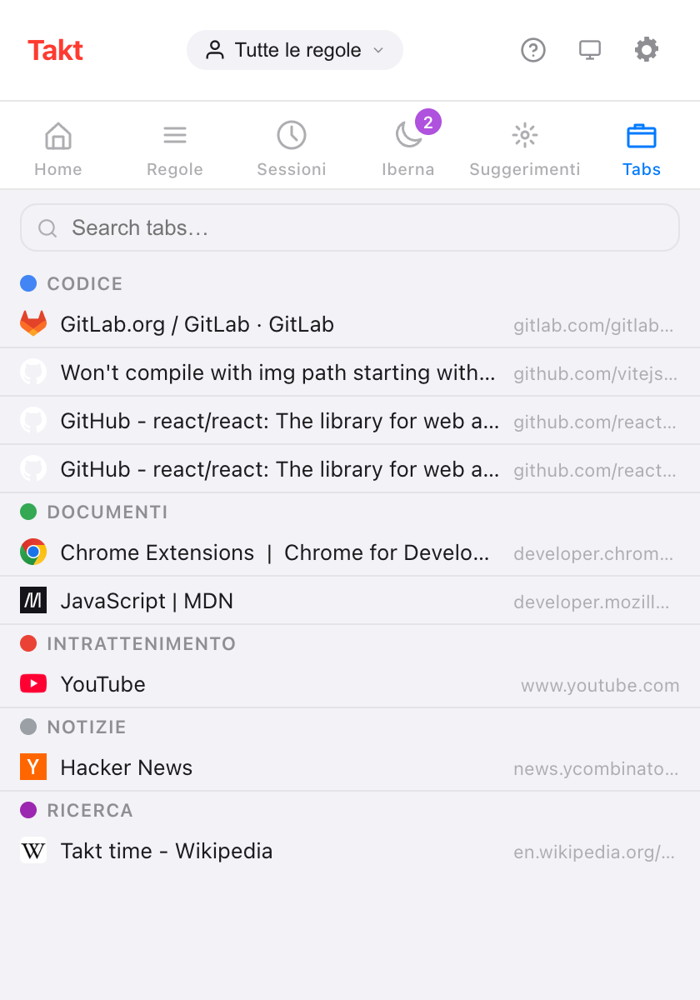

In breve: Alt+Shift+Space apre una casella di ricerca sopra la pagina. Scrivi, usa le frecce, premi Invio.
- Cerca tra schede aperte, schede ibernate e nella cronologia di navigazione se concedi l'autorizzazione.
- Funziona anche sulle pagine
chrome://, in una piccola finestra. - Il Cambio rapido è Premium ($3/mese o $30/anno). La casella di ricerca nel riquadro Tabs del popup è gratuita.
Perché trovare una scheda è così lento?
Oltre una ventina di schede, la barra di Chrome mostra le favicon e poco altro. Cerchi per icona, fai clic sulla scheda GitHub sbagliata, riprovi.
Scrivere è più veloce che guardare. Ti ricordi "la pull request sulla cache", non dove si trova nella barra.
Come cerco tra le schede aperte dalla tastiera?
- Premi Alt+Shift+Space. Si apre una casella di ricerca sopra la pagina corrente.
- Scrivi una parte qualsiasi del titolo o dell'URL. La ricerca non distingue maiuscole e minuscole, e l'elenco si aggiorna a ogni tasto.
- Spostati con ↑ e ↓. Alle estremità la selezione ricomincia dall'altro capo.
- Premi Enter per andarci. Takt mette a fuoco la scheda e porta in primo piano la sua finestra.
Altri due tasti: Tab copia nella casella di ricerca il titolo del risultato selezionato, e Esc la chiude. La casella si chiude anche se fai clic fuori o cambi finestra.

Dove cerca il Cambio rapido?
| Fonte | Quando compare | Cosa fa Invio |
|---|---|---|
| Schede aperte | Sempre; prima le più usate di recente, la scheda corrente per ultima | Passa alla scheda |
| Schede ibernate | Sempre, fino a 50 | Riattiva la scheda dov'era |
| Cronologia | Quando inizi a scrivere, con l'autorizzazione alla cronologia; fino a 20 | La apre in una nuova scheda |
L'ordine è fisso: schede aperte, poi schede ibernate, poi cronologia. La cronologia salta le pagine già aperte o ibernate e non elenca mai pagine chrome:// o delle estensioni.

Quell'ultima riga è il motivo per avere ricerca e ibernazione nella stessa estensione. Puoi chiudere le schede senza paura di perderle, perché scrivendo il loro nome tornano.
Funziona sulle pagine chrome://?
Sì. Le estensioni non possono disegnare sulle pagine di Chrome, quindi lì il Cambio rapido si apre invece in una finestra di 560 × 480. Vale per le pagine chrome://, chrome-extension://, about: e chrome-untrusted:// e per il Chrome Web Store. I tasti sono gli stessi.
C'è un modo gratuito per cercare le schede?
Sì: il riquadro Tabs nel popup di Takt. Elenca tutte le schede aperte sotto il loro gruppo, con le schede non raggruppate in una sezione a parte. Scrivi nella casella di ricerca per filtrare per titolo o URL; Esc la svuota. Fai clic su una riga per mettere a fuoco quella scheda e portare in primo piano la sua finestra.

| Riquadro Tabs del popup | Cambio rapido | |
|---|---|---|
| Piano | Free | Premium |
| Come si apre | Fai clic sull'icona di Takt, poi su Tabs | Alt+Shift+Space |
| Schede aperte | Sì, per gruppo | Sì, dalla più recente |
| Schede ibernate | No (hanno un riquadro tutto loro) | Sì |
| Cronologia | No | Con autorizzazione |
| Serve il mouse | Per aprire e scegliere | No |
Posso cambiare la scorciatoia?
Sì. Vai su chrome://extensions/shortcuts, trova Takt, fai clic sulla matita accanto a Quick-switch e premi i tasti che vuoi.
La mia cronologia viene inviata da qualche parte?
No. La ricerca nella cronologia è disattivata finché non concedi l'autorizzazione facoltativa in Settings → Autorizzazioni (Accesso alla cronologia di navigazione). La ricerca avviene dentro Chrome, e puoi revocare l'autorizzazione dalla stessa pagina. Senza, il Cambio rapido cerca comunque tra schede aperte e ibernate.
Cosa il Cambio rapido non fa
Cerca esattamente le lettere che scrivi, in qualsiasi punto del titolo o dell'URL. Non c'è ricerca approssimativa, quindi "gthub" non trova niente. Con il piano gratuito la scorciatoia non fa nulla; usa invece il riquadro Tabs.
Smetti di cercare tra le favicon. Scrivi il nome della scheda.
Aggiungi Takt a ChromeDomande frequenti
Qual è la scorciatoia per cercare tra le schede aperte con Takt?
Alt+Shift+Space apre il Cambio rapido. Puoi cambiarla in chrome://extensions/shortcuts.
Il Cambio rapido funziona sulle pagine chrome://?
Sì. Sulle pagine in cui le estensioni non possono funzionare, si apre in una finestra di 560 × 480 invece che sopra la pagina.
C'è un modo gratuito per cercare le schede in Takt?
Sì. Il riquadro Tabs del popup elenca le schede aperte per gruppo e ha una casella di ricerca. Il Cambio rapido è Premium, a $3/mese o $30/anno.
Il Cambio rapido cerca nella mia cronologia di navigazione?
Solo con l'autorizzazione facoltativa alla cronologia. I risultati della cronologia compaiono quando inizi a scrivere, fino a 20, e la ricerca avviene dentro Chrome.